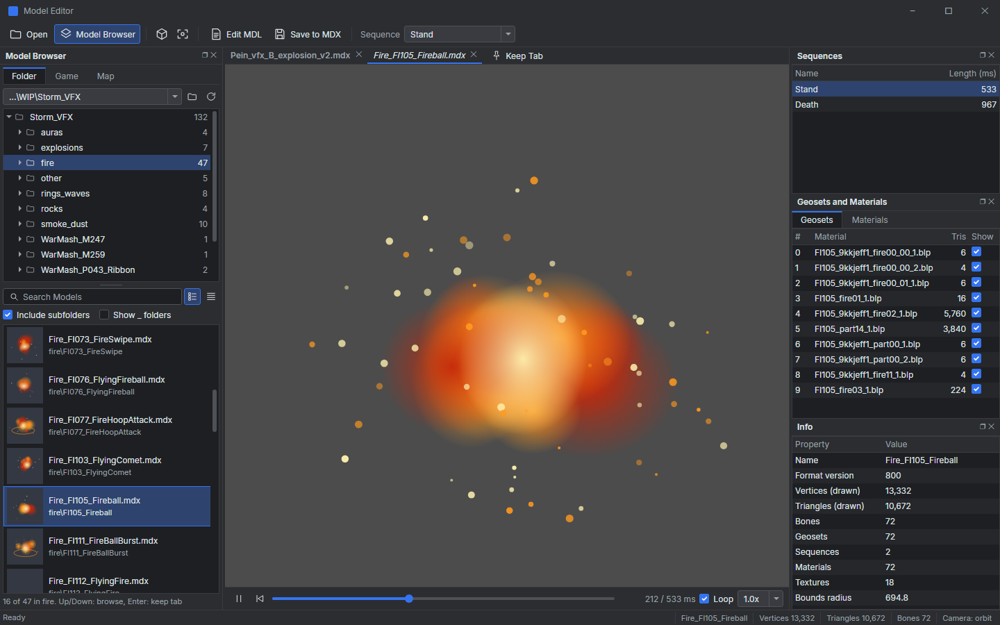
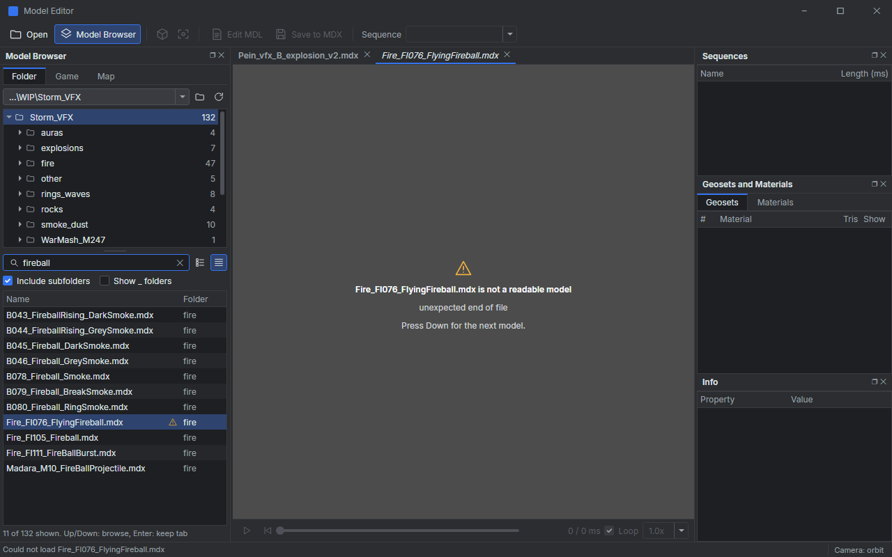
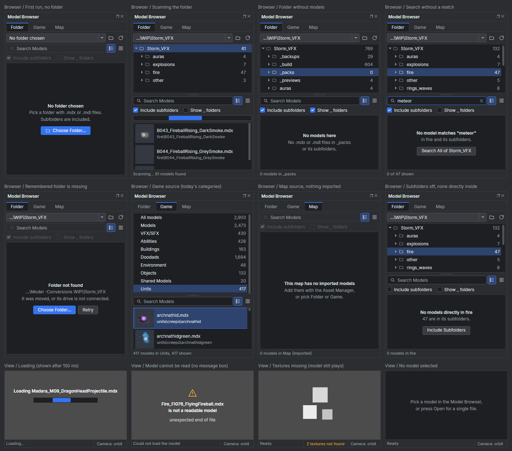
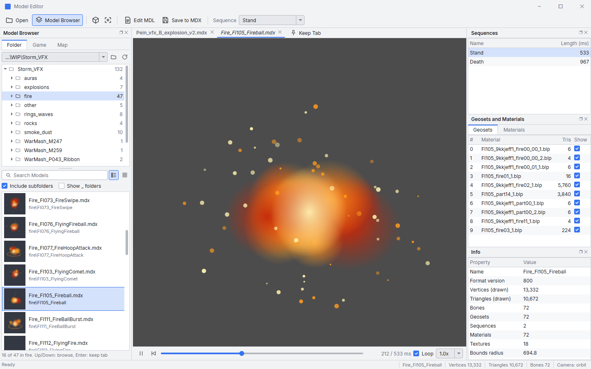
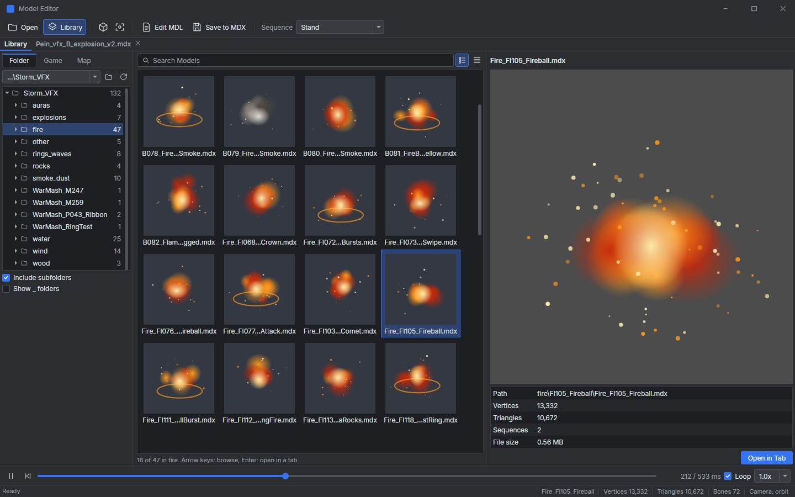
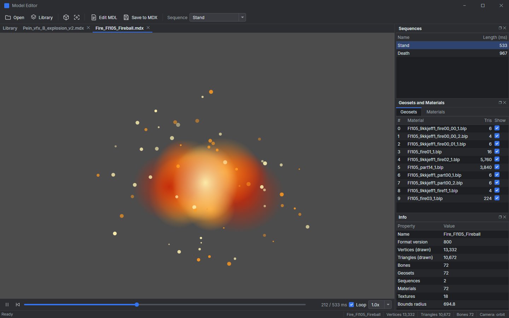

Folder, file and sequence names are real (Storm_VFX test folder). Effect pictures are placeholder drawings. The unreadable model, the missing textures and the scan progress are mock states; no real file is known to be broken. Geoset materials and the second and third Game rows are sample values.
A click or Up/Down shows the model in the italic preview tab, which the next selection replaces. Enter, double click, Keep Tab or a geoset change keeps the tab. Open stays first in the toolbar, starts in the browsed folder and opens a kept tab. The Browse Models button becomes the Model Browser dock toggle. The Object Editor picker dialog stays as it is today.
A / Effect selected, thumbnail list
A / Compact list at the default 1280x800, unreadable model
A / States
A / Light
The Model Editor opens on a pinned Library tab with a large preview. Enter, double click or Open in Tab opens a model tab with the inspector; the Library tab leads back. Open adds a model tab directly. The states of A apply to B's list and preview. In the grid, Up/Down jump one row of four; Left/Right step one model.
B / Library
B / Model opened from the Library